Week 9 · Shaders and material systems
Today: finish your original shader
Continue the shader assignment begun last week. Choose one unfinished feature or problem, improve it, and save a clear result with a readable graph and brief explanation. Use the existing assignment brief for formal requirements.
The reference stations, A–D comparisons and experiment record below are optional support. You do not need to complete a new station exercise. Keep useful changes in your own shader; reset only temporary reference tests.
Use these references to finish and explain your existing shader.
Open Week 9 slides · Download the complete Week 9 packet
Start the 25-minute lab · Open the shader cheat sheet and experiment record
Today’s agenda
| Time | Activity |
|---|---|
| 4:30–4:45 | Intro, agenda, tech setup |
| 4:45–6:00 | Guest speakers |
| 6:00–6:15 | Break |
| 6:15–6:25 | Quick material walkthrough |
| 6:25–6:50 | Finish your original shader |
| 6:50–7:00 | Final assignment overview |
Optional instructor reference project
Continue in your own shader project. The images below document the instructor’s demo; its licensed editable assets are not included in this public download. Use the slide and image references when you do not have that project.
Open Week09MaterialLab.uproject in Unreal Engine 5.7. All classroom examples, including the separate master-material area, are in /Game/Week09/Maps/W09_MaterialGallery.
Use Week 9 → Gallery – START HERE, then the numbered station shortcuts. Wall numbers show the teaching route; bracketed reference IDs stay fixed for the slide and lab links. Stop piloting before moving the camera freely.
One gallery, a progressive route
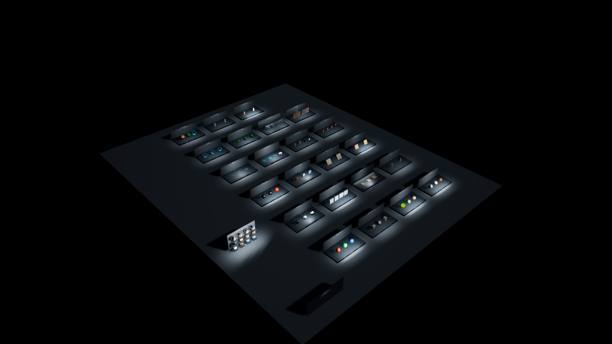
Gallery route and stable reference IDs
| Route | Topic | Reference ID |
|---|---|---|
| 1 | Shared and per-object controls | 11 |
| 2 | World projection | 05 |
| 3 | Vertex paint and height blend | 08 |
| 4 | Directional coverage | 09 |
| 5 | Snow on rock | 13 |
| 6 | Decal receivers | 10 |
| 7 | Puddles and reflected light | 15 |
| 8 | Clear coat | 03 |
| 9 | Native Material Layers | 12 |
| 10 | Wood and paint coating | 16 |
| 11 | BumpOffset and parallax | 04 |
| 12 | Brick POM | 07 |
| 13 | Foliage wind / WPO | 17 |
| 14 | Flow direction and mask | 18 |
| 15 | Burn and char | 01 |
| 16 | Masked disintegration | 26 |
| 17 | Shield and impact | 22 |
| 18 | Slime contact | 23 |
| 19 | Interior mapping and glass | 24 |
| 20 | GLSL → HLSL / Star Nest | 25 |
| 21 | Post-process styles | 19 |
Reference 14 is the separate master-material board. Optional diagnostics follow at routes 22–23. Slides labeled “station” use the stable reference ID, not the new wall order.
Explore the reference stations
Use a station if it helps your shader. Expand it to inspect the prepared view.
08 · Painted weights and height blend
MI_08_HeightBlend · Blend Contrast
Compare the boundary while paint, textures and tiling stay fixed.
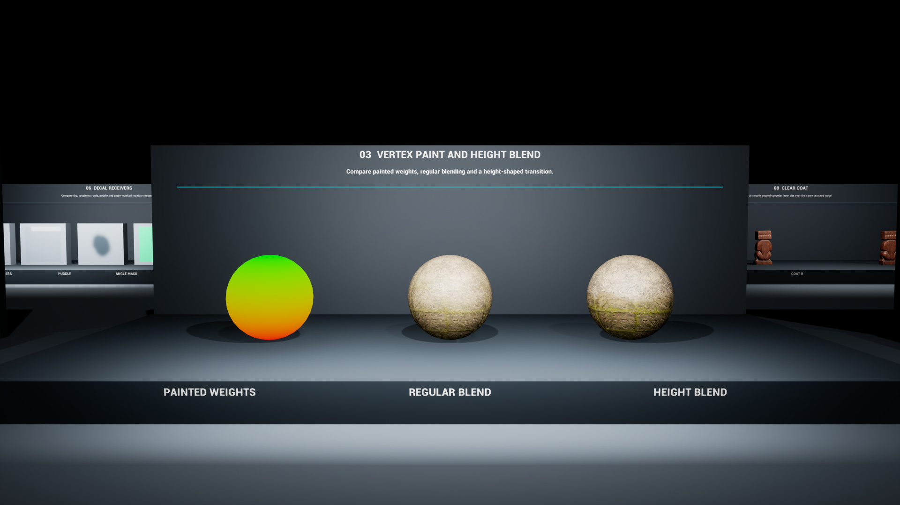
09 · Directional snow and moss
MPC_09_Directions · Snow_Direction / Moss_Direction
Moss normalizes a nonzero world direction; snow expects a unit direction. Compare coverage on an asymmetric mesh; this changes a shared collection.
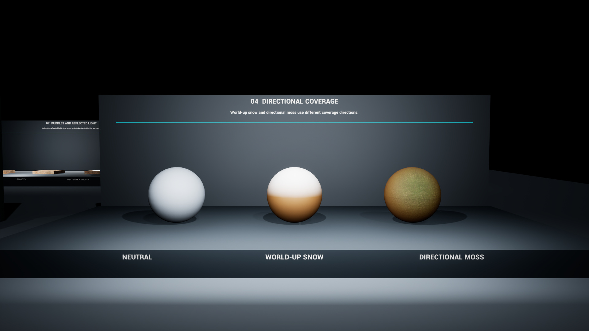
10 · Local decal changes
MI_10_RoughnessDecal · Roughness
Check projection bounds and the receiver before judging the surface response.
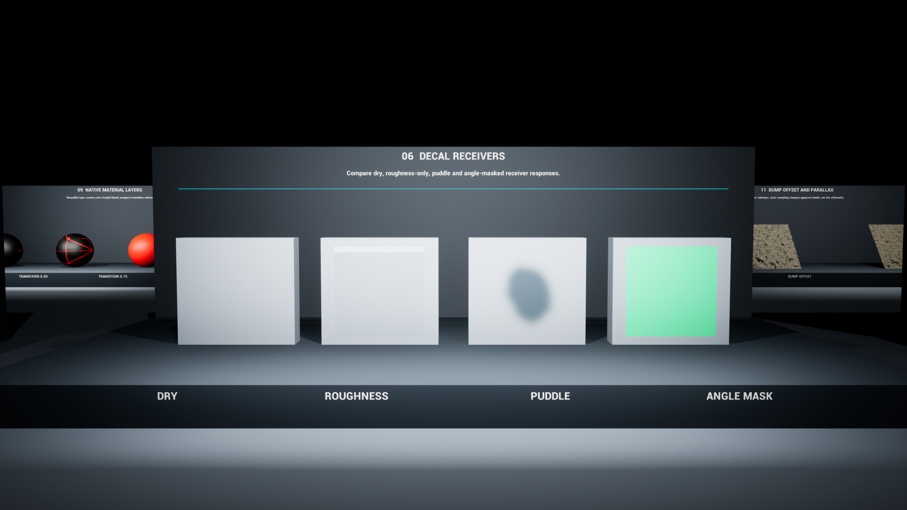
11 · Shared and per-component data
MPC_11_SharedControls · SharedRoughness / component CPD 0–2
Restore the collection before testing one component’s RGB.
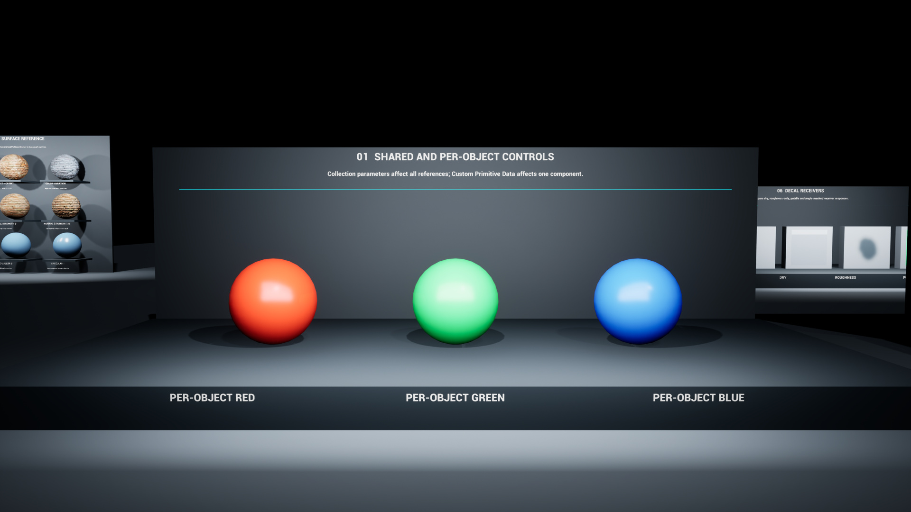
12 · Reusable material layers
MI_12_Layers_0 / 1 / 2 · Layer Parameters
Inspect blend-associated Transition at index 0: staged values 0.25 / 0.5 / 0.75.
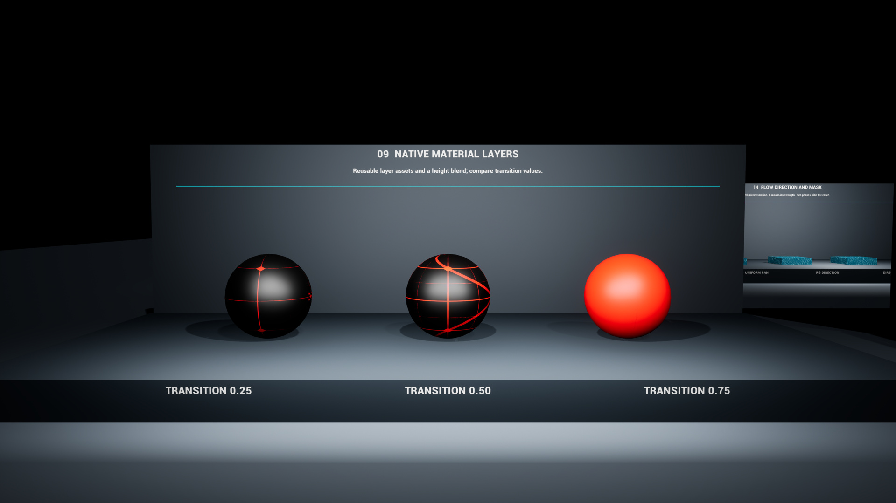
Optional advanced examples
Reference 13 · Snow on rock
Compare exposed rock and accumulated coverage on an uneven surface.
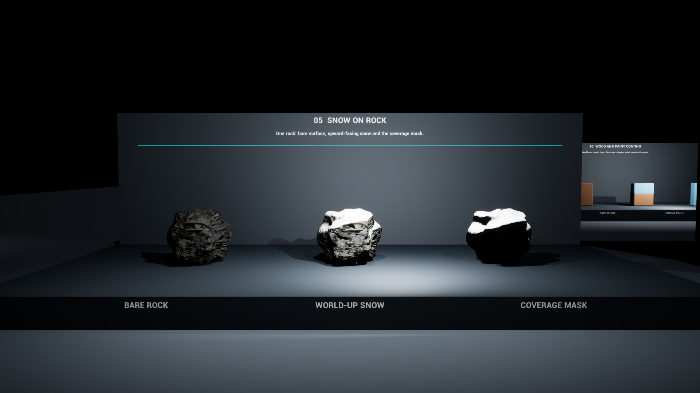
Reference 15 · Puddles and reflected light
Compare the dry surface and wet region under the same lighting. Reflection changes make the boundary readable.
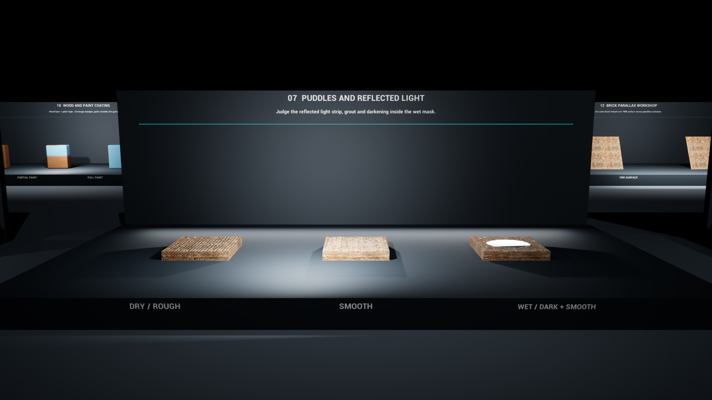
Reference 17 · Foliage wind / WPO
A root mask holds the base while vertex motion bends the grass. UV animation alone cannot bend geometry.
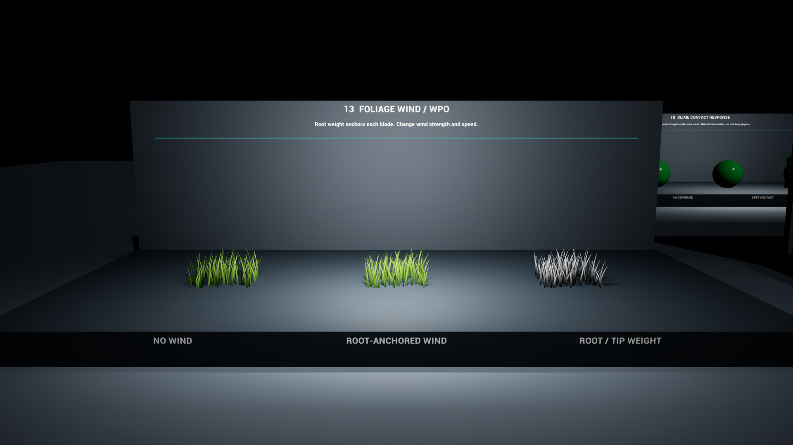
Reference 18 · Flow direction and mask
RG controls direction; a scalar mask controls where motion contributes.
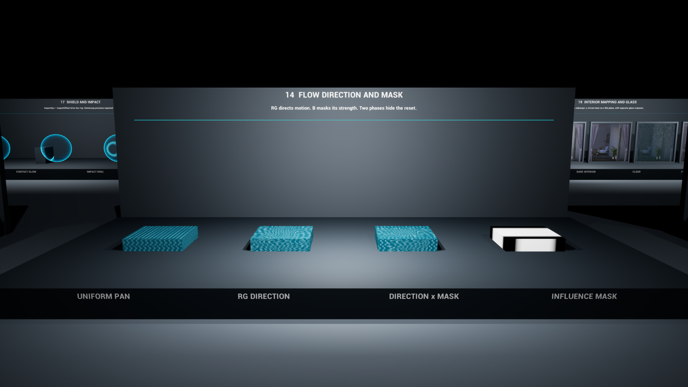
Reference 26 · Burn and disintegration
Opaque char remains on reference 01; reference 26 removes burned coverage with an opacity mask. In Play, I ignites, R resets and C removes heat while progress continues. No Niagara flames or edge particles are included.
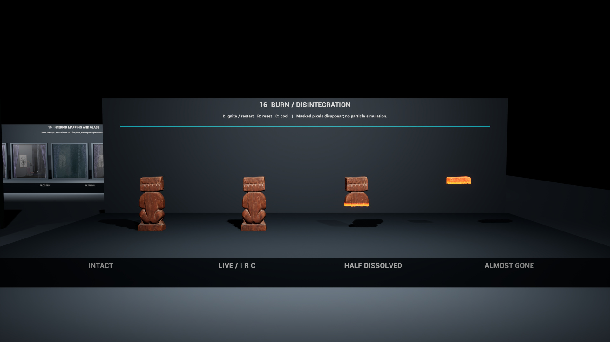
Reference 24 · Interior mapping and glass
Compare a virtual room on a flat window with clear, frosted and patterned glass.
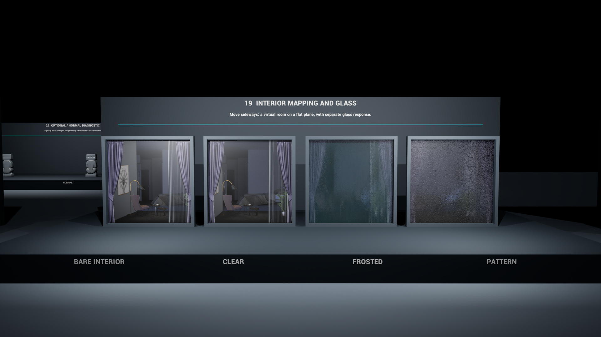
Reference 25 · A procedural shader port
Star Nest uses UV and time in an HLSL Custom node. Compare 8 and 20 steps at the same frozen time; appearance alone is not a performance measurement.
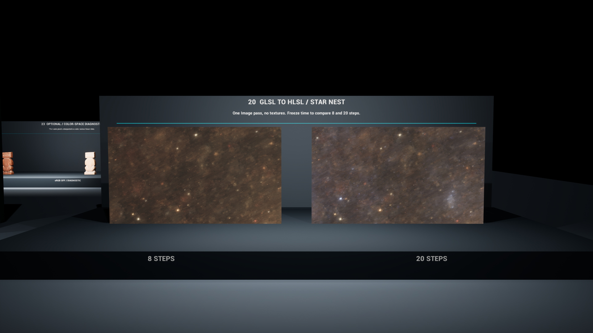
Final project · rough outline
Explore a technical-art question and build a focused result: a tool, shader, procedural content generation (PCG) system, effect, workflow or another exploration. Work solo or in a group; identify each person’s contribution. A tool is optional.
Final presentation: teach the class what you learned and demonstrate what you made. Explain the process, evidence, tradeoffs and limitations. Plan clear visuals and a breakdown so the work can become a portfolio piece.
Start with a question, minimum useful result, test and teaching goal. Use the published assignment brief for deadlines and submission details.
Use on another machine
Download PowerPoint (.pptx) —40 editable slides
Download the complete classroom ZIP, or clone the repository. Extract the whole folder. The Week 9 packet contains the PowerPoint, offline slide viewer, lab, cheat sheet, gallery images and the licensed Star Nest HLSL reference. The full classroom ZIP also includes the Week 8 materials. Open week09/slides/index.html directly for offline slides; the lab and cheat sheet also work offline. Online example videos require internet.
For the Week8 interactive shader lessons, run START-WINDOWS.cmd with Node.js18+ or Python3 installed. The repository includes the Week8 student Unreal project. The full Week9 instructor scene is a separate private transfer, because it includes licensed reference assets.